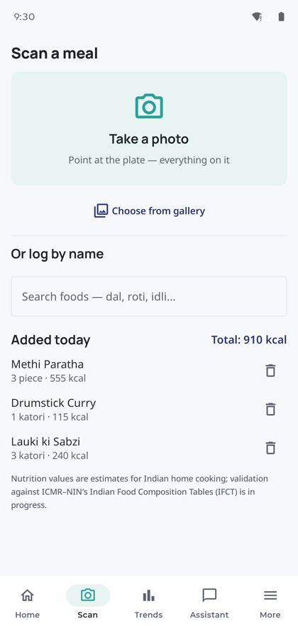

01 — AI Food Scanner
Photograph the plate.
Get katori-level numbers.
Point the camera at everything on the thali. A vision model names the dishes, then every match is grounded against a bundled table of 300 Indian foods — so you get methi paratha by the piece and sabzi by the katori, not "mixed vegetables, 1 serving."
- Correct any item before it's logged
- Works offline by name — dal, daal and dhal all match
- Portions in katori, roti and cups
Nutrition values are estimates for Indian home cooking. Validation against ICMR–NIN's Indian Food Composition Tables is in progress.
